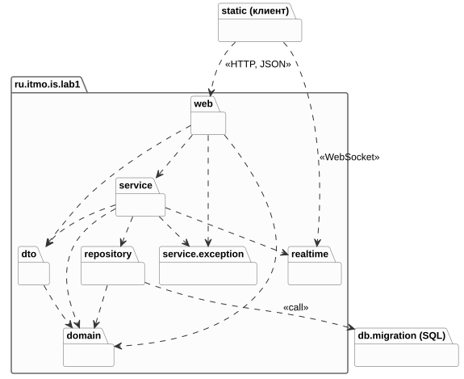
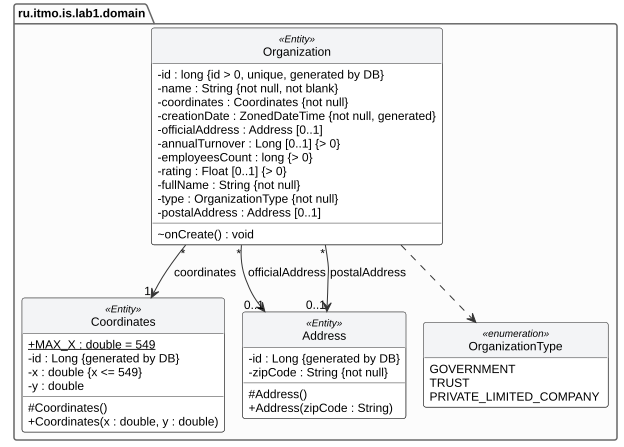
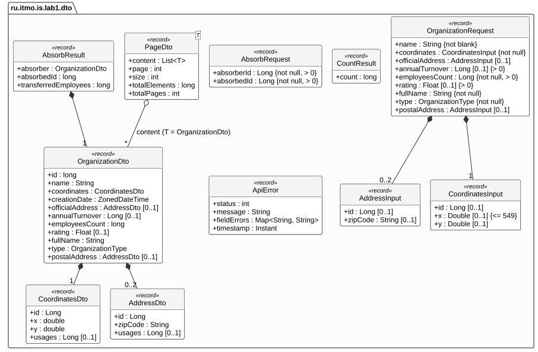
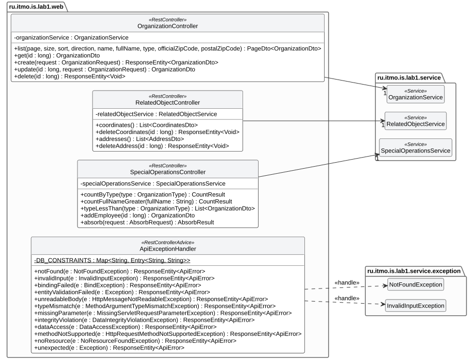
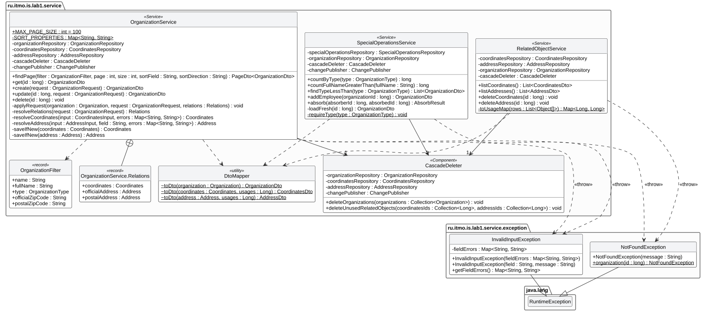
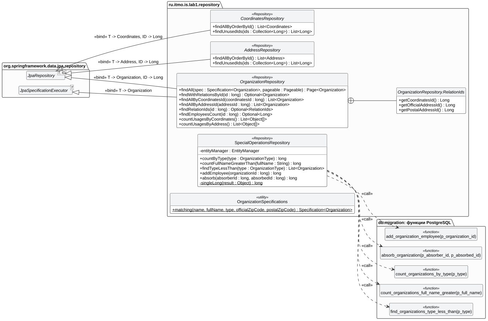
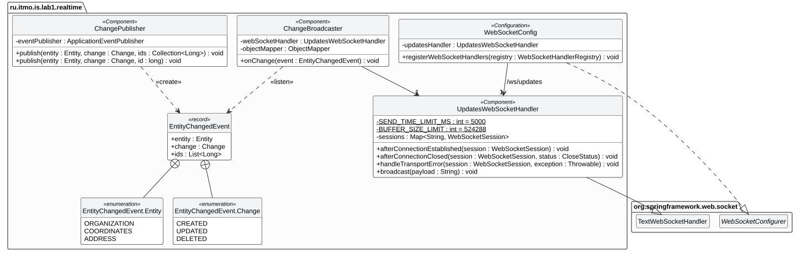
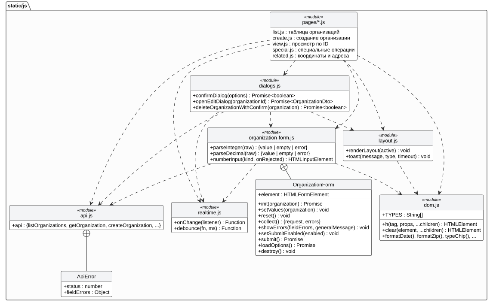

Лабораторная работа № 1
по дисциплине «Информационные системы»Информационная система для управления объектами класса Organization
Вариант {{VARIANT}}
Реализовать информационную систему, которая позволяет взаимодействовать с объектами класса
Organization, описание которого приведено ниже:
public class Organization {
private long id; //Значение поля должно быть больше 0, Значение этого поля должно быть уникальным, Значение этого поля должно генерироваться автоматически
private String name; //Поле не может быть null, Строка не может быть пустой
private Coordinates coordinates; //Поле не может быть null
private java.time.ZonedDateTime creationDate; //Поле не может быть null, Значение этого поля должно генерироваться автоматически
private Address officialAddress; //Поле может быть null
private Long annualTurnover; //Поле может быть null, Значение поля должно быть больше 0
private long employeesCount; //Значение поля должно быть больше 0
private Float rating; //Поле может быть null, Значение поля должно быть больше 0
private String fullName; //Поле не может быть null
private OrganizationType type; //Поле не может быть null
private Address postalAddress; //Поле может быть null
}
public class Coordinates {
private double x; //Максимальное значение поля: 549
private double y;
}
public class Address {
private String zipCode; //Поле не может быть null
}
public enum OrganizationType {
GOVERNMENT,
TRUST,
PRIVATE_LIMITED_COMPANY;
}
Разработанная система должна удовлетворять следующим требованиям:
В системе должен быть реализован отдельный пользовательский интерфейс для выполнения специальных операций над объектами:
Представленные операции должны быть реализованы в качестве функций БД, которые необходимо вызывать из уровня бизнес-логики приложения.
Особенности хранения объектов, которые должны быть реализованы в системе:
При создании системы нужно учитывать следующие особенности организации взаимодействия с пользователем:
При разработке ИС должны учитываться следующие требования:
Серверная часть написана на Java 17 с использованием Spring Boot 3.5 (Spring MVC, Spring WebSocket)
и Hibernate 6 (через Spring Data JPA), данные хранятся в PostgreSQL. Клиентская часть — набор
HTML-страниц с JavaScript-модулями, которые раздаёт само приложение. Диаграммы построены в PlantUML,
их исходные описания лежат в каталоге docs/uml репозитория. Геттеры, сеттеры и
конструкторы, создаваемые внедрением зависимостей, на диаграммах не показаны.
Приложение разделено на уровни: представление (web), бизнес-логика (service)
и хранение (repository). Зависимости направлены только «сверху вниз»: контроллеры
обращаются к сервисам, сервисы — к репозиториям, а сущности предметной области (domain)
не зависят ни от одного уровня. Рассылка изменений клиентам вынесена в отдельный пакет
realtime.

Таблица 1 — Назначение пакетов
| Пакет | Назначение |
|---|---|
web | REST-контроллеры Spring MVC и единая обработка ошибок с сообщениями по полям |
dto | Объекты запросов и ответов REST API (Java records) с аннотациями Bean Validation |
service | Бизнес-логика: транзакции, проверка ссылок на вспомогательные объекты, каскадное удаление, вызов специальных операций |
service.exception | Исключения бизнес-логики: «не найдено» и «некорректный ввод» |
repository | Уровень хранения: репозитории Spring Data JPA (Hibernate) и вызов функций БД |
domain | JPA-сущности Organization, Coordinates, Address и перечисление OrganizationType |
realtime | События изменений и их рассылка всем клиентам по WebSocket после фиксации транзакции |
db.migration | Миграции Flyway: таблицы и ограничения (V1), функции PL/pgSQL для специальных операций (V2) |
static | Клиент: страницы и JavaScript-модули, общение с сервером через REST и WebSocket |
Координаты и адреса хранятся в отдельных таблицах и связаны с организацией ассоциациями
«многие к одному», поэтому новую организацию можно привязать к уже существующим координатам и адресам.
Ограничения из задания показаны на диаграмме в фигурных скобках. Они продублированы аннотациями
Bean Validation и JPA в сущностях и ограничениями NOT NULL и CHECK в таблицах
БД. Идентификаторы генерирует PostgreSQL (GENERATED ALWAYS AS IDENTITY), дата создания
заполняется перед сохранением в методе onCreate() (@PrePersist).

Связанный объект в запросе передаётся одним из двух способов: идентификатором уже существующего
объекта (id) или значениями полей для создания нового. Для адресов значение
null означает, что адреса нет. Поле usages показывает, сколько организаций
ссылается на координаты или адрес; оно заполняется только в списках вспомогательных объектов.

Контроллеры только принимают HTTP-запросы и передают их сервисам, все операции выполняются на
сервере. ApiExceptionHandler переводит исключения (ошибки валидации, некорректный JSON,
нарушение ограничений БД, ошибки из функций БД) в ответ с общим сообщением и сообщениями по каждому
полю формы.

Каждый публичный метод сервиса выполняется в транзакции. OrganizationService до
сохранения проверяет все поля и ссылки на существующие координаты и адреса, поэтому новые
вспомогательные объекты попадают в БД только при корректном запросе. CascadeDeleter
собирает правила удаления в одном месте: вместе с организацией удаляются её координаты и адреса,
если на них больше никто не ссылается.

Репозитории Spring Data JPA работают через Hibernate. Фильтрация таблицы по полному совпадению
строится через Criteria API (OrganizationSpecifications), а пагинация и сортировка
выполняются запросом к БД. Специальные операции вызываются только из
SpecialOperationsRepository нативными запросами к функциям PL/pgSQL.

Сервис публикует EntityChangedEvent внутри транзакции, а ChangeBroadcaster
обрабатывает его с помощью @TransactionalEventListener(phase = AFTER_COMMIT): сообщение
уходит всем подключённым клиентам только после фиксации транзакции, а откатившиеся изменения не
рассылаются. Получив событие, клиент заново запрашивает данные и обновляет таблицу, страницу
объекта или открытое окно изменения.

Каждой странице соответствует отдельный модуль из каталога pages. Общие части
вынесены в модули: меню и уведомления (layout.js), форма организации с проверкой ввода
(OrganizationForm), модальные окна изменения и подтверждения удаления
(dialogs.js), REST-клиент (api.js) и подписка на изменения по WebSocket
с автоматическим переподключением (realtime.js).

Ссылка на репозиторий с исходным кодом: {{REPO}}
Полный листинг исходного кода приведён в Приложении А. Структура проекта:
is_1/
├── build.gradle, settings.gradle сборка (Gradle, Spring Boot 3.5)
├── docs/uml/ исходные описания UML-диаграмм (PlantUML)
└── src/main/
├── java/ru/itmo/is/lab1/
│ ├── IsLab1Application.java точка входа
│ ├── domain/ сущности JPA
│ ├── dto/ запросы и ответы REST API
│ ├── repository/ Spring Data JPA, вызов функций БД
│ ├── service/ бизнес-логика, каскадное удаление
│ │ └── exception/ исключения бизнес-логики
│ ├── realtime/ WebSocket-оповещения
│ └── web/ REST-контроллеры, обработка ошибок
└── resources/
├── application.yml настройки (профиль helios: pg:5432/studs)
├── db/migration/ V1 — схема БД, V2 — функции PL/pgSQL
└── static/ HTML-страницы, CSS, JavaScript-модули
Таблица 2 — Соответствие требований задания и реализации
| Требование | Реализация |
|---|---|
| Создание, просмотр по ИД, изменение, удаление в отдельных окнах | Страницы «Создать» и «Поиск по ID», модальное окно изменения, окно подтверждения удаления |
| Связь нового объекта с существующими вспомогательными объектами | Для координат и адресов в форме выбирается режим «Новые» или «Существующие» (список из БД) |
| Таблица, пагинация, сортировка, фильтрация по полному совпадению | OrganizationService.findPage, OrganizationSpecifications, страница index.html |
| Изменение из таблицы и из области визуализации объекта | Кнопка «Изменить» в строке таблицы и на странице просмотра объекта |
| Автоматическое обновление у других пользователей | WebSocket /ws/updates, рассылка после коммита транзакции |
| Удаление связанных объектов | CascadeDeleter, внешние ключи ON DELETE CASCADE |
| Специальные операции как функции БД | V2__special_operations.sql, вызов из SpecialOperationsService |
| Ограничения полей на уровне ORM и БД | Аннотации в domain, ограничения в V1__schema.sql |
| Генерация id средствами БД | GENERATED ALWAYS AS IDENTITY, @GeneratedValue(strategy = IDENTITY) |
| Реакция на некорректный ввод | Фильтрация недопустимых символов и проверки на клиенте, серверная валидация с сообщениями по полям |
| Навигация через меню | Общее меню на всех страницах (layout.js) |
Сборка и запуск: gradle bootJar, затем
java -jar build/libs/is-lab1.jar --spring.profiles.active=helios с переменными окружения
DB_USER, DB_PASSWORD и PORT. Таблицы и функции БД создаются
автоматически миграциями Flyway при первом запуске.
В ходе лабораторной работы разработана информационная система для управления объектами класса Organization и связанными с ними объектами Coordinates и Address. Серверная часть построена на Spring MVC, уровень хранения — на Hibernate, данные хранятся в PostgreSQL. Приложение разделено на уровни представления, бизнес-логики и хранения; рассылка изменений вынесена в отдельный компонент.
Все операции над объектами выполняются на сервере в транзакциях. Координаты и адреса хранятся в
отдельных таблицах, поэтому при создании организации её можно связать с уже существующими
вспомогательными объектами. Требования к полям класса выполнены дважды: аннотациями Bean Validation и
JPA на уровне ORM и ограничениями NOT NULL и CHECK на уровне БД.
Идентификаторы генерирует PostgreSQL. Схему БД создают миграции Flyway, а Hibernate при запуске
только сверяет с ней маппинг сущностей, поэтому расхождение кода и базы обнаруживается сразу.
Специальные операции реализованы функциями PL/pgSQL и вызываются из уровня бизнес-логики. Порядок
значений перечисления для операции «type меньше заданного» совпадает с порядком объявления enum в
Java. Значения fullName сравниваются побайтово (COLLATE "C"), чтобы результат не зависел от
локали сервера БД. При поглощении обе организации блокируются (SELECT … FOR UPDATE) в фиксированном
порядке, чтобы параллельные поглощения не приводили к взаимоблокировке.
Изменения доставляются всем клиентам по WebSocket. Событие рассылается только после фиксации транзакции, поэтому клиент, перезапросив данные, видит уже сохранённое состояние, а изменения из откатившихся транзакций до клиентов не доходят. Если объект изменили или удалили, пока у пользователя открыто окно его изменения, система предупреждает об этом.
В процессе работы пришлось учесть несколько неочевидных моментов:
NaN считается больше любого числа, а Infinity
проходит проверку «больше 0», поэтому ограничения для координат и рейтинга дополнены явными
проверками на конечность;В результате выполнения работы получен практический опыт проектирования многоуровневого веб-приложения на Spring, отображения объектной модели на реляционную с помощью Hibernate, переноса бизнес-операций в хранимые функции СУБД и синхронизации состояния между несколькими клиентами в реальном времени.